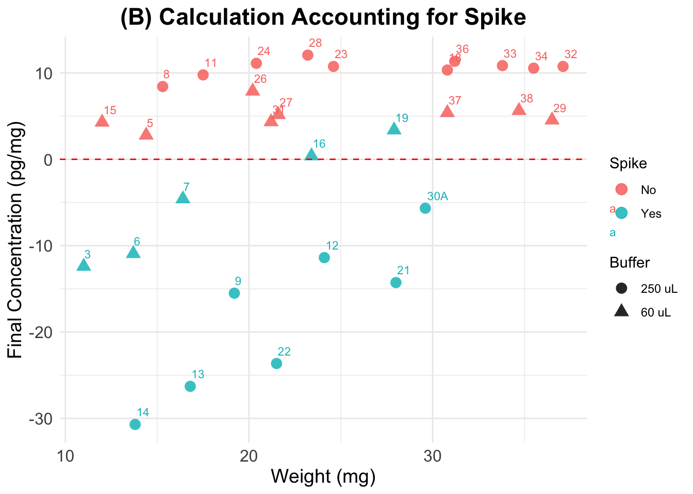
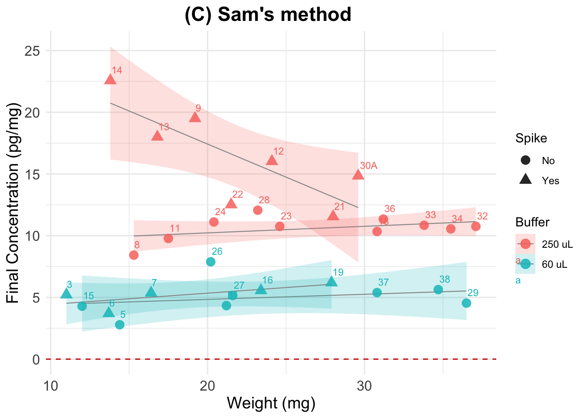

Cortisol Concentration Values, Test3
Paloma Contreras
2025-04-25
Last updated: 2025-04-25
Checks: 6 1
Knit directory:
HairCort-Evaluation-Nist2020/
This reproducible R Markdown analysis was created with workflowr (version 1.7.1). The Checks tab describes the reproducibility checks that were applied when the results were created. The Past versions tab lists the development history.
The R Markdown file has unstaged changes. To know which version of
the R Markdown file created these results, you’ll want to first commit
it to the Git repo. If you’re still working on the analysis, you can
ignore this warning. When you’re finished, you can run
wflow_publish to commit the R Markdown file and build the
HTML.
Great job! The global environment was empty. Objects defined in the global environment can affect the analysis in your R Markdown file in unknown ways. For reproduciblity it’s best to always run the code in an empty environment.
The command set.seed(20241016) was run prior to running
the code in the R Markdown file. Setting a seed ensures that any results
that rely on randomness, e.g. subsampling or permutations, are
reproducible.
Great job! Recording the operating system, R version, and package versions is critical for reproducibility.
Nice! There were no cached chunks for this analysis, so you can be confident that you successfully produced the results during this run.
Great job! Using relative paths to the files within your workflowr project makes it easier to run your code on other machines.
Great! You are using Git for version control. Tracking code development and connecting the code version to the results is critical for reproducibility.
The results in this page were generated with repository version 8108c43. See the Past versions tab to see a history of the changes made to the R Markdown and HTML files.
Note that you need to be careful to ensure that all relevant files for
the analysis have been committed to Git prior to generating the results
(you can use wflow_publish or
wflow_git_commit). workflowr only checks the R Markdown
file, but you know if there are other scripts or data files that it
depends on. Below is the status of the Git repository when the results
were generated:
Ignored files:
Ignored: .DS_Store
Ignored: .RData
Ignored: .Rhistory
Ignored: analysis/.DS_Store
Ignored: analysis/.Rhistory
Ignored: data/.DS_Store
Ignored: data/Test3/.DS_Store
Ignored: data/Test4/.DS_Store
Untracked files:
Untracked: data/Test3/Standard_data_test3.csv
Unstaged changes:
Deleted: Data_Cortisol_Processed.csv
Modified: analysis/ELISA_Calc_FinalVals_test3.Rmd
Deleted: data/Test3/Data_Cortisol_Processed.csv
Deleted: data/Test3/Standard_data.csv
Deleted: data/Test3/precision_accuracy_summary.csv
Deleted: data/Test4/Data_Cortisol_Processed.csv
Note that any generated files, e.g. HTML, png, CSS, etc., are not included in this status report because it is ok for generated content to have uncommitted changes.
These are the previous versions of the repository in which changes were
made to the R Markdown
(analysis/ELISA_Calc_FinalVals_test3.Rmd) and HTML
(docs/ELISA_Calc_FinalVals_test3.html) files. If you’ve
configured a remote Git repository (see ?wflow_git_remote),
click on the hyperlinks in the table below to view the files as they
were in that past version.
| File | Version | Author | Date | Message |
|---|---|---|---|---|
| Rmd | 8108c43 | Paloma | 2025-04-25 | improved figures |
| html | 8108c43 | Paloma | 2025-04-25 | improved figures |
| Rmd | 0ed450f | Paloma | 2025-04-25 | updated input (myassays.com) including dilution |
| html | 0ed450f | Paloma | 2025-04-25 | updated input (myassays.com) including dilution |
| Rmd | dd200fc | Paloma | 2025-04-23 | corrected figures |
| html | dd200fc | Paloma | 2025-04-23 | corrected figures |
| Rmd | 7240d2e | Paloma | 2025-04-22 | organized files |
| html | 7240d2e | Paloma | 2025-04-22 | organized files |
| Rmd | 82ad928 | Paloma | 2025-04-17 | upd |
| html | 82ad928 | Paloma | 2025-04-17 | upd |
| Rmd | 16ce91c | Paloma | 2025-04-10 | recalc_evaluations |
| html | 16ce91c | Paloma | 2025-04-10 | recalc_evaluations |
| html | bbb70a9 | Paloma | 2025-04-09 | comparing methods |
| Rmd | ccad031 | Paloma | 2025-04-09 | new_calc |
| html | ccad031 | Paloma | 2025-04-09 | new_calc |
| Rmd | 77c2ab5 | Paloma | 2025-04-08 | cleaning test3 |
| html | 77c2ab5 | Paloma | 2025-04-08 | cleaning test3 |
Summary
Final cortisol value calculations were conducted using three methods:
Standard Method (Method A): Calculates cortisol concentration without correction for spiked samples.
Spike-Corrected Method (Method B): Adjusts for spiked samples to account for addition of a known amount of cortisol, following Nist et al. 2020.
Sam’s Method (Method C): Adjusts for spiked samples using a different equation
Results: As we see below, the formula used by Nist et al. results in negative values, which would mean that there is no cortisol in original samples. This could be an artifact of an extremely high absorbance level caused by an excessive amount of spike. Non-spiked samples, on the other hand, result in values that are within the range found in similar studies of cortisol in human hair.
| Summary | Nist et al. | (A) Standard | (B) Spike-Corrected | (C) Sam’s |
|---|---|---|---|---|
| Mean cort conc (pg/mg) | — | 16.796 | -0.1866 | 9.568 |
| Median cort conc (pg/mg) | — | 10.801 | 4.4386 | 10.058 |
| Range cort conc (pg/mg) | — | 2.7 to 60.4 | -30.7005 to 12.0647 | 2.786 to 22.566 |
| Weight (mg) of my samples | |
|---|---|
| Range | 11 to 37.1 |
| Mean | 23.54 |
| Median | 22.4 |
Conclusions: After accounting for differences in dilution and weight, our results suggest future Assays should use the optimal parameters listed below:
- Dilution of 250uL is preferable over 60uL
- Non-spiked samples seem to generate expected results
Concerns
- Spike results in unrealistic values
- Could be explained by the higher weight of our samples
- Dilution of 250uL results in values that are twice as big as with 60uL, but they should be very similar or at least overlap
Explanation of each variable used in calculations
Ave_Conc_pg/ml: average ELISA reading per sample in pg/mL
Weight_mg: hair weight in mg
Buffer_nl: assay buffer volume in nL → we convert to mL
Spike: binary indicator (1 = spiked sample)
SpikeVol_uL: volume of spike added in µL
Dilution: dilution factor (already accounted for)
Vol_in_well.tube_uL: total volume in well/tube in µL (for spike correction)
std: standard reading value
extraction: methanol volume ratio = vol added / vol recovered (e.g. 1/0.75 ml)
Cortisol concentration calculations
Input is data with low quality samples flagged, but they get removed before continuing with calculations.
Parameters and unit transformations:
# Define volume of methanol used for cortisol extraction
# vol added / vol recovered (mL)
extraction <- 1 / 0.75
# Reading of spike standard and conversion to ug/dl
std <- 3139.5 # test 3 backfit
std_ul.dl <- std / 10000 # std in ul/dl
# Creating variables in indicated units
df$Buffer_ml <- c(df$Buffer_nl/1000) # dilution (buffer)
df$Ave_Conc_ug.dl <- c(df$Ave_Conc_pg.ml/10000) # Transform to μg/dl from assay output| Wells | Sample | Category | Binding.Perc | Ave_Conc_pg.ml | Ave_Conc_ug.dl | Weight_mg | Buffer_ml | Spike | SpikeVol_ul | Dilution | TotalVol_well_ul | Failed_samples | Sample_comparable |
|---|---|---|---|---|---|---|---|---|---|---|---|---|---|
| E5 | 11 | NoSpike | 71.6 | 513.2 | 0.05132 | 17.5 | 0.25 | 0 | 0 | 1 | 50 | NA | 14 |
| F5 | 12 | YesSpike | 30.0 | 2728.0 | 0.27280 | 24.1 | 0.25 | 1 | 25 | 1 | 50 | NA | 17 |
| G5 | 13 | YesSpike | 32.1 | 2477.0 | 0.24770 | 16.8 | 0.25 | 1 | 25 | 1 | 50 | NA | 14 |
(A) Standard Calculation
Formula:
((A/B) * (C/D) * E * 10,000) = F
- A = μg/dl from assay output;
- B = weight (in mg) of hair subjected to extraction;
- C = vol. (in ml) of methanol added to the powdered hair;
- D = vol. (in ml) of methanol recovered from the extract and subsequently dried down;
- E = vol. (in ml) of assay buffer used to reconstitute the dried extract;
- F = final value of hair CORT Concentration in pg/mg.
##################################
##### Calculate final values #####
##################################
data$Final_conc_pg.mg <- c(
((data$Ave_Conc_ug.dl) / data$Weight_mg) * # A/B *
extraction * # C/D *
data$Buffer_ml * 10000 ) # E * 10000Summary of all samples Min. 1st Qu. Median Mean 3rd Qu. Max.
2.786 8.021 10.801 16.796 15.729 60.483 | Wells | Sample | Category | Binding.Perc | Ave_Conc_pg.ml | Ave_Conc_ug.dl | Weight_mg | Buffer_ml | Spike | SpikeVol_ul | Dilution | TotalVol_well_ul | Failed_samples | Sample_comparable | Final_conc_pg.mg | |
|---|---|---|---|---|---|---|---|---|---|---|---|---|---|---|---|
| 27 | H3 | 6 | YesSpike | 34.7 | 2204.0 | 0.22040 | 13.7 | 0.06 | 1 | 25 | 1 | 50 | NA | 2 | 12.870073 |
| 28 | A5 | 7 | YesSpike | 30.5 | 2669.0 | 0.26690 | 16.4 | 0.06 | 1 | 25 | 1 | 50 | NA | 3 | 13.019512 |
| 29 | B5 | 8 | NoSpike | 77.8 | 386.8 | 0.03868 | 15.3 | 0.25 | 0 | 0 | 1 | 50 | NA | 14 | 8.427015 |
| 30 | C5 | 9 | YesSpike | 30.3 | 2693.0 | 0.26930 | 19.2 | 0.25 | 1 | 25 | 1 | 50 | NA | 15 | 46.753472 |
(B) Accounting for Spike
We followed the procedure described in Nist et al. 2020:
“Thus, after pipetting 25μL of standards and samples into the appropriate wells of the 96-well assay plate, we added 25μL of the 0.333ug/dL standard to all samples, resulting in a 1:2 dilution of samples. The remainder of the manufacturer’s protocol was unchanged. We analyzed the assay plate in a Powerwave plate reader (BioTek, Winooski, VT) at 450nm and subtracted background values from all assay wells. In the calculations, we subtracted the 0.333ug/dL standard reading from the sample readings. Samples that resulted in a negative number were considered nondetectable. We converted cortisol levels from ug/dL, as measured by the assay, to pg/mg—based on the mass of hair collected and analyzed using the following formula:
A/B * C/D * E * 10,000 * 2 = F
where - A = μg/dl from assay output; - B = weight (in mg) of collected hair; - C = vol. (in ml) of methanol added to the powdered hair; - D = vol. (in ml) of methanol recovered from the extract and subsequently dried down; - E = vol. (in ml) of assay buffer used to reconstitute the dried extract; 10,000 accounts for changes in metrics; 2 accounts for the dilution factor after addition of the spike; and - F = final value of hair cortisol concentration in pg/mg”
##################################
##### Calculate final values #####
##################################
dSpike$Final_conc_pg.mg <-
ifelse(
dSpike$Spike == 1, ## Only spiked samples
((dSpike$Ave_Conc_ug.dl - (std_ul.dl)) / # (A-spike)
dSpike$Weight_mg) # / B
* extraction * # C / D
dSpike$Buffer_ml * 10000 * 2, # E * 10000 * 2
dSpike$Final_conc_pg.mg
)Summary of all samples Min. 1st Qu. Median Mean 3rd Qu. Max.
-30.7005 -9.6103 4.4386 -0.1866 10.1987 12.0647 Summary without spiked samples Min. 1st Qu. Median Mean 3rd Qu. Max.
2.786 5.217 9.101 8.111 10.754 12.065 | Wells | Sample | Category | Binding.Perc | Ave_Conc_pg.ml | Ave_Conc_ug.dl | Weight_mg | Buffer_ml | Spike | SpikeVol_ul | Dilution | TotalVol_well_ul | Failed_samples | Sample_comparable | Final_conc_pg.mg | |
|---|---|---|---|---|---|---|---|---|---|---|---|---|---|---|---|
| 28 | A5 | 7 | YesSpike | 30.5 | 2669.0 | 0.26690 | 16.4 | 0.06 | 1 | 25 | 1 | 50 | NA | 3 | -4.590244 |
| 29 | B5 | 8 | NoSpike | 77.8 | 386.8 | 0.03868 | 15.3 | 0.25 | 0 | 0 | 1 | 50 | NA | 14 | 8.427015 |
| 30 | C5 | 9 | YesSpike | 30.3 | 2693.0 | 0.26930 | 19.2 | 0.25 | 1 | 25 | 1 | 50 | NA | 15 | -15.503472 |
(C) Sam’s calculation
Developed using Sam’s advice and logic. To facilitate the understanding of what is going on, here I do not transform the output values from pg/ml to ug/dL (as done in A and B).
- Step 1: Calculate contribution of the spike
- Step 2: Substract spike from plate reading values and calculate final values accounting for dilution of the sample, weight, and reconstitution
Step 1: Calculate contribution of spike
X * Y / Z / SPd = SP
- SP = final value of spike contribution in pg/mL
- X = volume of spike added (mL)
- Y = concentration of the spike added (pg/mL)
- SPd = if serially diluted, dilution factor for the spike (i.e: 1, 2, 4, 8, etc.)
- Z = total volume (mL) in the well or tube, if spike is added before loading the plate (sample + spike)
# Transforming units
data$SpikeVol_ml <- data$SpikeVol_ul/1000 # X to mL
data$TotalVol_well_ml <- data$TotalVol_well_ul/1000 # Z to mL
# SPd = dilution (in this case, is 1 for all)
# Calculate spike contribution to each sample
## ( Spike vol. x Spike Conc.)
## ------------------------ / dilution = Spike contribution
## Total vol.
data$Spike.cont_pg.ml <- (((data$SpikeVol_ml * std ) / # X * Y /
data$TotalVol_well_ml) / # Z /
data$Dilution) # SPd
summary(data$Spike.cont_pg.ml) Min. 1st Qu. Median Mean 3rd Qu. Max.
0.0 0.0 0.0 627.9 1569.8 1569.8 The reading for standard 1 in this plate is 3139.5The total contribution of the Spike to each sample is 1569.75 pg/mLStep 2 : Substract spike and calculate final values
((A - SP)/B) * (C/D) * E * SLd = F
- A = pg/ml from assay output;
- SP = spike contribution (in pg/ml)
- B = weight (in mg) of hair subjected to extraction;
- C = vol. (in ml) of methanol added to the powdered hair;
- D = vol. (in ml) of methanol recovered from the extract and subsequently dried down;
- E = vol. (in ml) of assay buffer used to reconstitute the dried extract;
- F = final value of hair CORT Concentration in pg/mg.
##################################
##### Calculate final values #####
##################################
dSpiked$Final_conc_pg.mg <-
((dSpiked$Ave_Conc_pg.ml - dSpiked$Spike.cont_pg.ml) / # (A - spike)
dSpiked$Weight_mg) * # / B *
extraction * # C / D
dSpiked$Buffer_ml # E
dSpiked[ , c("Sample", "Ave_Conc_pg.ml", "Buffer_ml","Spike.cont_pg.ml", "Final_conc_pg.mg")] Sample Ave_Conc_pg.ml Buffer_ml Spike.cont_pg.ml Final_conc_pg.mg
1 11 513.2 0.25 0.00 9.775238
2 12 2728.0 0.25 1569.75 16.020055
3 13 2477.0 0.25 1569.75 18.000992
4 14 2504.0 0.25 1569.75 22.566425
5 15 643.6 0.06 0.00 4.290667
6 16 3196.0 0.06 1569.75 5.559829
7 18 955.4 0.25 0.00 10.339827
8 19 3730.0 0.06 1569.75 6.194265
9 21 2540.0 0.25 1569.75 11.550595
10 22 2377.0 0.25 1569.75 12.515504
11 23 793.6 0.25 0.00 10.753388
12 24 680.2 0.25 0.00 11.114379
13 26 1991.0 0.06 0.00 7.885149
14 27 1393.0 0.06 0.00 5.159259
15 28 839.7 0.25 0.00 12.064655
16 29 2072.0 0.06 0.00 4.541370
17 3 2287.0 0.06 1569.75 5.216364
18 30A 2888.0 0.25 1569.75 14.845158
19 31 1149.0 0.06 0.00 4.335849
20 32 1197.0 0.25 0.00 10.754717
21 33 1100.0 0.25 0.00 10.848126
22 34 1124.0 0.25 0.00 10.553991
23 36 1062.0 0.25 0.00 11.346154
24 37 2076.0 0.06 0.00 5.392208
25 38 2444.0 0.06 0.00 5.634582
26 5 501.4 0.06 0.00 2.785556
27 6 2204.0 0.06 1569.75 3.703650
28 7 2669.0 0.06 1569.75 5.362195
29 8 386.8 0.25 0.00 8.427015
30 9 2693.0 0.25 1569.75 19.500868Summary for all samples: Min. 1st Qu. Median Mean 3rd Qu. Max.
2.786 5.370 10.058 9.568 11.499 22.566 | Sample | Final_conc_pg.mg | Ave_Conc_pg.ml | Spike.cont_pg.ml | Binding.Perc | Weight_mg | Buffer_ml | SpikeVol_ul | Dilution | TotalVol_well_ul | |
|---|---|---|---|---|---|---|---|---|---|---|
| 21 | 33 | 10.848126 | 1100.0 | 0.00 | 52.3 | 33.8 | 0.25 | 0 | 1 | 50 |
| 22 | 34 | 10.553991 | 1124.0 | 0.00 | 51.7 | 35.5 | 0.25 | 0 | 1 | 50 |
| 23 | 36 | 11.346154 | 1062.0 | 0.00 | 53.2 | 31.2 | 0.25 | 0 | 1 | 50 |
| 24 | 37 | 5.392208 | 2076.0 | 0.00 | 36.1 | 30.8 | 0.06 | 0 | 1 | 50 |
| 25 | 38 | 5.634582 | 2444.0 | 0.00 | 32.5 | 34.7 | 0.06 | 0 | 1 | 50 |
| 26 | 5 | 2.785556 | 501.4 | 0.00 | 72.1 | 14.4 | 0.06 | 0 | 1 | 50 |
| 27 | 6 | 3.703650 | 2204.0 | 1569.75 | 34.7 | 13.7 | 0.06 | 25 | 1 | 50 |
| 28 | 7 | 5.362195 | 2669.0 | 1569.75 | 30.5 | 16.4 | 0.06 | 25 | 1 | 50 |
| 29 | 8 | 8.427015 | 386.8 | 0.00 | 77.8 | 15.3 | 0.25 | 0 | 1 | 50 |
| 30 | 9 | 19.500868 | 2693.0 | 1569.75 | 30.3 | 19.2 | 0.25 | 25 | 1 | 50 |
Plots
(A) Standard Calculation
Final cortisol concentrations not accounting for spike. Tags are sample numbers.
Expected results: a straight horizontal line showing that I obtained same cortisol concentration value in the Y axis, across different sample weights.

(B) Accounting for Spike
Final cortisol concentrations accounting for Spike as instructed in Nist et al. 2020.
Expected results: lower values than in the previous plot for the spiked samples, but not as low as negative samples (for all of them). Spiked and non-spiked samples should be aligned (same concentration across different weights)

(C) Sam’s calculation
Final cortisol concentration values using new method.
Expected results: one unique horizontal line, regardless of
the spiking status and dilution. We see this line for the spiked samples
that were reconstituted using 60 uL (i.e, the most concentrated
samples). Perhaps the 250uL samples, by being more diluted and having a
larger volume, present more variation if the cort distribution within
the well/tube is not homogeneous.
Note that samples seem to be less aligned or more separated
from each other than in previous plots. This is due to a difference in
scale (A has values 0 to 60, while here all values fall between 2.5 and
22.5).
`geom_smooth()` using formula = 'y ~ x'
Evaluation using method C
`geom_smooth()` using formula = 'y ~ x'
The previous figure shows that:
- results are relatively stable across weights, particularly for the samples where a dilution of 250 uL was used
- For the 250 uL reconstitutions, about 18% of the variability in Final_conc_pg.mg is explained by Weight_mg
- For the 60 uL reconstitutionsAbout 6.6% of the variability is explained by Weight_mg.
- Reconstitution volume affects estimation of cortisol concentration in a significant way: even though final concentration numbers account for differences in the dilutions, the results we observe for each group do not overlap
- the average value when using 250 uL of buffer is twice as big as when using 60 uL

Optimal dilution (using method C results)
Error using samples w/0.06 mL buffer
Mean Absolute Error (MAE) 0.06 mL: 0.823 Standard Deviation of Residuals 0.06 mL: 1.182 Error using samples w/0.25 mL buffer
Mean Absolute Error (MAE) 0.25 mL: 2.56 Standard Deviation of Residuals 0.25 mL: 3.47 From this we conclude that using a 60 uL dilution produces more accurate/more consistent results
Error using spiked samples only
Mean Absolute Error (MAE) ALL: 5.47 Standard Deviation of Residuals ALL: 6.474 Error using non-spiked samples only
Mean Absolute Error (MAE) ALL: 2.64 Standard Deviation of Residuals ALL: 2.956 Error using all samples
Mean Absolute Error (MAE) ALL: 3.948 Standard Deviation of Residuals ALL: 4.983
sessionInfo()R version 4.5.0 (2025-04-11)
Platform: aarch64-apple-darwin20
Running under: macOS Sequoia 15.4.1
Matrix products: default
BLAS: /Library/Frameworks/R.framework/Versions/4.5-arm64/Resources/lib/libRblas.0.dylib
LAPACK: /Library/Frameworks/R.framework/Versions/4.5-arm64/Resources/lib/libRlapack.dylib; LAPACK version 3.12.1
locale:
[1] en_US.UTF-8/en_US.UTF-8/en_US.UTF-8/C/en_US.UTF-8/en_US.UTF-8
time zone: America/Detroit
tzcode source: internal
attached base packages:
[1] stats graphics grDevices utils datasets methods base
other attached packages:
[1] dplyr_1.1.4 paletteer_1.6.0 broom_1.0.8 ggplot2_3.5.2
[5] knitr_1.50
loaded via a namespace (and not attached):
[1] sass_0.4.10 generics_0.1.3 tidyr_1.3.1 lattice_0.22-6
[5] stringi_1.8.7 digest_0.6.37 magrittr_2.0.3 evaluate_1.0.3
[9] grid_4.5.0 fastmap_1.2.0 Matrix_1.7-3 rprojroot_2.0.4
[13] workflowr_1.7.1 jsonlite_2.0.0 whisker_0.4.1 backports_1.5.0
[17] rematch2_2.1.2 promises_1.3.2 mgcv_1.9-1 purrr_1.0.4
[21] scales_1.3.0 jquerylib_0.1.4 cli_3.6.4 rlang_1.1.6
[25] munsell_0.5.1 splines_4.5.0 withr_3.0.2 cachem_1.1.0
[29] yaml_2.3.10 tools_4.5.0 colorspace_2.1-1 httpuv_1.6.16
[33] vctrs_0.6.5 R6_2.6.1 lifecycle_1.0.4 git2r_0.36.2
[37] stringr_1.5.1 fs_1.6.6 pkgconfig_2.0.3 pillar_1.10.2
[41] bslib_0.9.0 later_1.4.2 gtable_0.3.6 glue_1.8.0
[45] Rcpp_1.0.14 xfun_0.52 tibble_3.2.1 tidyselect_1.2.1
[49] rstudioapi_0.17.1 farver_2.1.2 nlme_3.1-168 htmltools_0.5.8.1
[53] rmarkdown_2.29 labeling_0.4.3 compiler_4.5.0